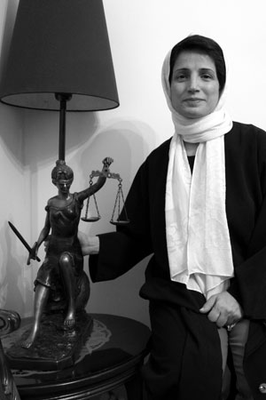

|
|

در شصدمین سالروز روزجهانی حقوق بشر
متن سخنرانی نسرین ستوده در مراسم اهداء جایزه بین المللی حقوق بشر ایتالیا در میرانو
جمعه29 آذر 1387
خانمها، آقايان، حضار محترم
در ابتدا لازم ميدانم تبريكات صميمانه خود را به مناسبت شصتمين سالگرد تصويب اعلاميه جهاني حقوق بشر اعلام نمايم: زيرا اعلاميه جهاني حقوق بشر يكي از مهمترين دستاوردهاي بشر است كه البته با هزينهاي گران به دست آمده است.

بسيار مفتخرم كه در سالگرد تصويب اعلاميه جهاني حقوق بشر به مناسبت تعلق اولين جايزه كميته بينالمللي حقوق بشر در ميان شما هستم و از اينكه اين جايزه به من داده شده است بسيار خوشوقتم.
از همه كساني كه براي برپايي اين جلسه تلاش كردند سپاسگزارم و اميد دارم اين تلاشها به ارتقاء حقوق بشر و توسعه آن در سراسر جهان و از جمله كشور من، ايران مدد برساند. ضمن آنكه اعطاء اين جايزه را پاس ميدارم و به آن افتخار ميكنم مايلم مسائلي را با شما در ميان بگذارم:
1- بي شك هريك از شما حكايتهايي را از نقض حقوق بشر در ايران شنيدهايد حقوق زنان، كودكان، فعالان جنبشهاي مختلف اجتماعي اعم از جنبش دانشجويي، كارگري و معلمان. ضمن تأييد اين حكايتها كه زمينه ساز نقض حقوق بشر در ايران است، دوست دارم از تلاش جامعه مدني ايران و هزينه سنگيني كه در دهه گذشته پرداختهاند و تلاش فعالان اجتماعي كه احكام سنگيني تا پاي اعدام را تحمل كردهاند، سخن بگويم.
تلاش فعالان جنبش دانشجويي، كارگري، معلمان، زنان و اقليتهاي قومي به ويژه هموطنان كرد ما با چالشهاي بزرگ قضايي مواجه بوده است كه در بسياري از اوقات امر دفاع از آنان را با دشواري مواجه ساخته است.
زيرا بر خلاف قانون اساسي ايران، قوانين مربوط به نحوه رسيدگي به اتهامات، به قاضي اين اختيار را ميدهد كه از دخالت وكيل در مرحله تحقيقات مقدماتي در پروندههاي متهمان از جمله متهمان سياسي جلوگيري به عمل آورد و اين خود زمينه ساز نقض حقوق متهمان سياسي است.
از طرف ديگر وجود قوانيني كه ميتواند مخالفان سياسي حكومت يا فعالان اجتماعي را به عنوان محارب مورد محاكمه قرار دهد و حكم اعدام براي آنها صادر كند، از ديگر مشكلات پيش روي فعالان اجتماعي است كه البته بسياري از آنان را با احكام سنگين حبسهاي طويلالمدت و يا حتي اعدام مواجه كرده است.
2- وكلاء مدافع فعالان اجتماعي خود با تضييقات فراواني روبرو هستند. آنها نه تنها با محدوديتهاي قانوني براي دفاع از موكلانشان روبرو هستد بلكه همواره با تهديد تشكيل پرونده و حبس و زندان مواجهاند. بسياري از وكلاء مدافع حقوق بشر به كرات محكوم به زندان شدهاند و به موجب حكم دادگاه مدت زندان خود را تحمل كردهاند.
اما جرياني كه مصمم است از طريق قانون و راههاي مسالمتآميز به دفاع از فعالان اجتماعي بپردازد، همچنان بر پيگيري مطالبات قانوني از طريق راههاي مسالمت آميز پا فشاري ميكند.
3- مايلم در خصوص فعاليت زنان در ايران نيز نكاتي را با شما در ميان بگذارم. زنان ايراني طي دهههاي گذشته، دشواريهاي زيادي را پشت سر نهادند ولي امروزه با تكيه بر پيشينه صد ساله خويش و به يمن تلاش سي ساله در جايگاهي ايستادهاند كه داراي خواستههايي روشن و شفاف هستند و اين خواستهها را با صداي رسا اعلام ميكنند.
آنها خواستار تغيير قوانيني هستند كه ديه زنان را نصف مردان قرار ميدهد، يعني اگر مرد و زني در خيابان تصادف كنند، خسارتي كه به زن پرداخت ميشود نصف مرد است.
خواستار تغيير قوانيني هستند كه ارزش شهادت زنان را نصف مردان ميداند حق طلاق را در اختيار مطلق مرد قرار ميدهد و در همان حال به وي حق تعدد زوجات را اعطا ميكند تا چهار زن براي ازدواج دائم داشته باشد و حق داشتن همسران صيغهاي تا بي نهايت را داشته باشد آنها خواستار تغيير قوانيني هستند كه سن مسؤليت كيفري دختران را 9 سال و پسران را 15 سال قرار ميدهد و بدين ترتيب دختركان 9 ساله را در معرض مجاز ات اعدام قرار ميدهد.
قوانيني كه سهمالارث دختران را نصف پسران خانواده قرار ميدهد و ارث زنان را از همسران خود از اين هم كمتر قرار ميدهد. قانوني كه سن ازدواج را براي دختران 13 سال تعيين كرده است و حق طلاق را از اين دختركان پس از رسيدن به سن بلوغ، سلب ميكند. پر واضح است
كه اين قوانين نميتواند مورد تأييد جامعه زناني باشد كه به گواهي آمار رسمي، 70% صندليهاي دانشگاه را در ايران اشغال كردهاند.
در اعتراض به اين قوانين و به دنبال جستجوي راههاي مبتكرانه، آنها اقدام به راه اندازي كمپين يك ميليون امضاء براي تغيير قوانين تبعيض آميز كردند تا با جمع آوري امضاء از زنان و مردان كوچه و خيابان و درب به درب منازل و ايجاد بحث پيرامون قوانين تبعيض آميز، مبادرت به جمعآوري امضاء كنند و اين امضاها را به مجلس قانون گذاري در ايران تسليم نمايند و البته براي اين كار، بهاي سنگيني پرداختند. ما حصل هزينهاي كه زنان ايران براي اين راهكار مبتكرانهشان پرداخت كردند عبارت بود از: دستگيري، احضار، حكم محكوميت و ممنوع الخروجي.
كه اگر بخواهم به نمونهاي از آن اشاره كنم، طي 80 روز از ژانويه 2008 تا مارس 2008 هر 4 روز يك مورد بوده است.
طي سالهاي اخيركه دوران سخت اين جنبش محسوب ميشود، زنان نه تنها مورد تعقيب قضايي، بازداشت و يا ممنوعالخروجي قرار گرفتند بلكه احكام محكوميت سنگين، تا 5 سال حبس و يا شلاق نيز براي آنان صادر شد. زنان ايراني هرچند در جايگاهي هستند كه خواستههايشان كاملاً روشن و شفاف است، اما در عين حال به مانند بسياري از جنبشهاي زنان در سراسر دنيا با گزينش روشهاي مسالمتآميز، اراده خود را مبني بر پرهيز از روشهاي خشونت آميز اعلام مينمايند.
در آخرين اقدام، در اعتراض به لايحه حمايت از خانواده كه حق تعدد زوجات را به رسميت ميشناخت، فعالان جنبش زنان با حضور در مجلس، خواستار خروج اين لايحه از دستور كار مجلس شدند. اين عمل فعالان جنبش زنان هر چند منجر به خروج موقت لايحه از دستور كار شد اما اظهارات ضد و نقيض از سوي دست اندركاران، باعث شده است كه جامعه زنان ايران، همچنان نگران سرنوشت لايحه باشند و بنابراين فعاليت زنان در اين زمينه ادامه دارد و آنها با نگراني سرنوشت لايحه را دنبال ميكنند و چنانچه لازم باشد با اعتراضات مدني ، فرياد خود را به گوش جهانيان ميرسانند و البته هزينه آن را نيز پرداخت ميكنند.
4- من از اين امكان استفاده ميكنم تا جامعه مدني ايتاليا را به كمك بطلبم تا موارد نقض حقوق بشر در ايرن را باز هم بيشتر و بيشتر مورد توجه قرار دهند و در اين راه همراه ما باشند، همچنانكه تاكنون بودهاند.
دوستان و همراهان گرامي
بي شك حقوق بشر در جامعه اي پايدار نميماند كه چند كشور آن سوتر مكرراً نقض ميشود، به تجربهاي كه خود در ايران شاهد آن بودم اشاره ميكنم كه تا سي سال پيش اعدام كودكان به موجب قوانين رسمي ايران ممنوع بود اما تأثير ديدگاهي كه به نام مذهب، تصميم گيري ميكند توانست در مدت اندكي اين حقوق را چنان دگرگون كند كه دختركان 9 ساله را در معرض اعدام قرار دهد.
در پايان مايلم از پيش كسوتان حقوق بشر در ايران و از پيشگامي زنان در اين خصوص يادي كنم. از تلاشهاي شيرين عبادي كه با وجود تهديدهاي مستمر عليه ايشان و خانوادهشان همچنان بر اتخاذ روشهاي قانوني و پرهيز از خشونت پاي ميفشرند و همچنين مهرانگيزكار كه با پرداخت هزينهاي سنگين و تحمل زندان و مخاطرات جدي سلامتي خود ، ناگزير به ترك ايران شد.
همچنين مايلم از تلاش حقوقدانان كلاسيك ايتاليا يادي كنم كه تأثير همه جانبهاي بر نگاه حقوقي دنيا نسبت به جرم و مجرم گذاشتند. تلاشهايي كه قبل از پديد آمدن اعلاميه حقوق بشر منجر به تغيير ديدگاه جهانيان به مجرم و رعايت حقوق متهمان گرديد. تلاش حقوقدانان بزرگي چون بكاريا، انريكوفري و رافائل گاروفالو از پيشگامان رعايت حقوق متهمان و رسيدگي به اتهام، بدون پيش داوري و عاري از خشم و كينه و حذف مجازاتهاي سنگين از جمله اعدام بودهاند. بي شك افكار اين حقوق دانان بزرگ بر شكل گيري مفهوم حقوق بشر تأثير بسزايي داشته است.
من بر اين باورم همچنانكه حقوقدانان هموطن شما در زمان خود با تلاشي سخت، بر اصلاح سيستم قضايي و مفهوم جرم و مجرم تأثير بسزايي گذاشتند. ما نيز خواهيم توانست با تلاش خود به اصلاح قوانيني كمك كنيم كه به آن اعتراض داريم. هرچند زمانهاي كه در آن هستيم سخت و دشوار است، اما پيش از ما نيز ميليونها نفر در مسير دشوار آزادي و دموكراسي گام برداشتند. همچنانكه آنها توانستند، ما نيز ميتوانيم بر اين سختيها غلبه كنيم.
نسرین ستوده در پاسداشت زحماتش: عدالت، بالاتر از شمشیر ایستاده است!